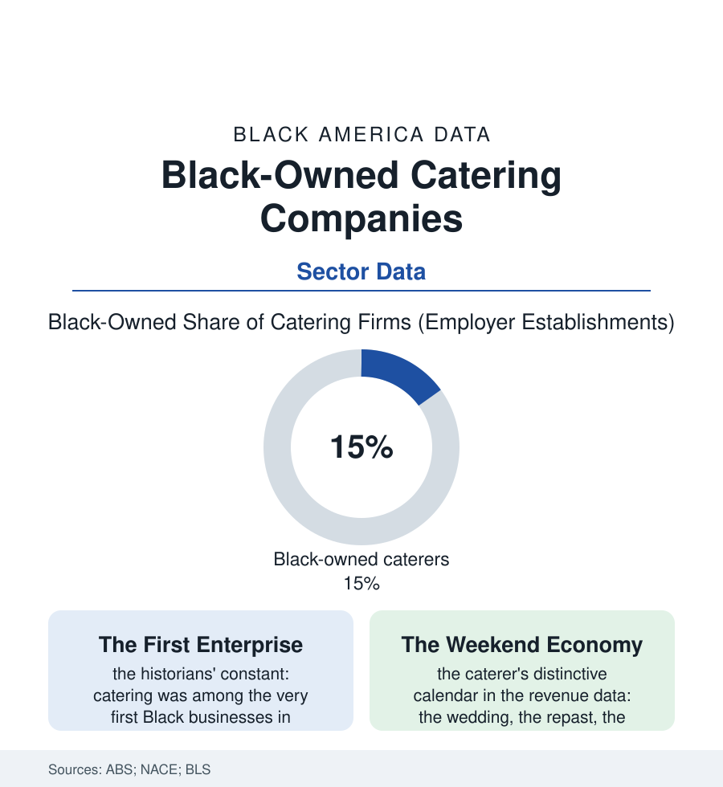

Black Business
Feeding the Occasion: Black-Owned Catering Businesses
Catering is the food economy's event wing — and one of Black business's deepest benches, from the church-kitchen graduate to the corporate contract caterer. The catering file.

Before the restaurant, before the storefront, there was the catered table: Black caterers fed the young republic's elite in Philadelphia and built some of its first Black fortunes doing work the hosts took the credit for enjoying. Two centuries on, catering remains one of Black business's deepest shelves — the food economy's event wing, employing thousands and feeding the community's entire ceremonial calendar. This article reads the catering file.
From the Big House's Kitchen to the Invoice
The lineage is the business histories' best-documented arc: the enslaved and free Black cooks whose skill was the plantation's and the city's open secret, converted at freedom into the catering firm — the nineteenth century's Black caterer as a recognized civic figure (Philadelphia's and Charleston's and New Orleans' catering dynasties in the city directories, their firms the era's steadiest Black employers, their apprenticeships the culinary profession's first Black school system). The modern industry's structure kept the shape: an event-priced business (the per-head contract, the rented kitchen and the commissary, the staff hired by the occasion — the gig file's ancestor, a workforce of cooks and servers assembled per event across two centuries) whose barriers are reputational before they are financial, which is why the shelf stayed deep when capital-locked industries stayed thin: the cook's skill was the credential, the church dinner the audition, the wedding the showroom. The contemporary census counts the result — Black ownership in catering running ahead of the food-service average, the firms sorted from the home-based plate-sale graduate (the cottage-food laws of the recent state data formalizing her first license) through the storefront caterer with her commissary and her truck, to the top tier's contract firms feeding the stadiums, the convention centers, and the corporate campuses of the contracting file — the arena's official caterer a Black-founded firm in more than one of this atlas's cities, the concessionaire giants' minority-partner programs a shelf within the shelf.
The commissary deserves its own line in the ledger: the licensed shared kitchen — rented by the hour, inspected once for many firms — has become the shelf's standard incubator in the city data, the food-business file's answer to the storefront's rent (the commissary building's tenant roll reading like a census of the neighborhood's caterers, bakers, sauce-makers, and truck operators, its loading dock the scene of the trade's knowledge exchange). The licensing stack above it (the health permit, the insurance binder the venues demand, the food-manager certifications) is the firm's real tuition — a few thousand dollars and a semester of evenings between the home kitchen and the invoice book, a barrier low enough to climb and real enough to mean something once climbed.
The Ceremonial Economy's Ledger
The caterer's calendar is the community's own: the wedding season of the wedding file (the caterer as its largest single invoice), the repast — the funeral meal whose reliability is the firm's sacred trust in the death-care file's economy (the call that cannot be shopped, the menu that cannot fail, the caterer's name passed between funeral directors and pastors like a bond), the church anniversary and the pastor's banquet, the sorority gala and the corporate Black-history luncheon (the February spike in the booking data its own small season), the family reunion's park pavilion with its sternos and its honor system. The economics carry the calendar's risk profile: the weekend-weighted revenue, the deposit-and-cancellation discipline the pandemic stress-tested to the industry's floor (the events economy's total shutdown the sector's near-death in the closure data — and its roaring return, the backlog years minting the firms that survived into their strongest books, the labor shortage repricing the server's hour across the whole file). The professionalization rows track the shelf's climb: the culinary-school pipelines, the certification and preferred-vendor lists of the venues (the gatekeeping file's catering edition — the list as the industry's quiet border, the Black firms' associations publishing their own directories in answer, as the wedding file recorded), and the ghost-kitchen and corporate-lunch platforms bidding for the same kitchens. Two hundred years from the big house's kitchen to the convention center's contract: the through-line is a community that never stopped knowing whose food it trusted with its occasions.
Reading the Catering Data
Catering is the business section's oldest continuous shelf — the enterprise that began in the nation's first dining rooms and never left the table. The census counts its firms among the food economy's Blackest rows. The repasts get fed, the weddings get their stations, the galas run on time: the invoice is modern, the trust is inherited, and the data, for once, merely confirm what every guest already knew.
More in Black Business
Black-Owned Businesses: Counts, Receipts, and the Representation Gap
About 161,000 Black-owned employer firms and three million solo ventures: how the Census Bureau counts Black business ownership, where firms concentrate, and the gap between population share and business share.
Black Median Net Worth: The Wealth Gap in Federal Reserve Data
The Federal Reserve puts Black median family net worth at $44,900, against $285,000 for White families — about 16 cents on the dollar. The widest gap in economic data.
Black Buying Power: The $1.8 Trillion Consumer Economy
Black buying power is estimated at about $1.8 trillion — larger than the economy of most nations. What the figure measures, who produces it, and what it buys.
Source: U.S. Census Bureau Annual Business Survey; National Association for Catering and Events; Bureau of Labor Statistics food services data; Small Business Administration research.